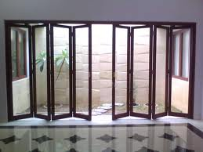

Kaca ialah kebutuhan yang krusial bagi sebuah industry ataupun gedung. Kaca semakin melengkapi bangunan supaya menonjol lebih cantik dan mempunyai nilai estetika sekiranya di pandang orang.
Variasi-tipe kaca diantara lain kaca tempered Jakarta Selatan, kaca shower, railing kaca, kanopi kaca dan masih banyak lagi. Semua material hal yang demikian dapat di aplikasikan harga sebuah hunian terlihat lebih indah nyaman dan juga aman. Berikut ini sedikit penjelasan mengenai bermacam ragam kaca dan fungsi kaca dan juga parket lantai kayu jati yang bisa anda peroleh.
Jasa Pemasangan Kaca Tempered Jakarta Selatan

Semakin banyak orang yang berharap menerapkan kaca ini. Dis.or.id memiliki segala energi pakar yang di rekrut cuma mereka yang profesional yang tahu persis bagaimana sistem memakai alat dan bagaimana membersihkan kaca gedung bertingkat. Sementara itu, untuk rumah hunian, komponen dari rumah seperti kamar mandi serta kanopi lazimnya terbuat dari kaca tempered Jakarta Selatan. Selain sembarang tukang juga dapat mengerjakan pengerjaan pemotongan ini. Kecuali ini tidak lain karena kian banyak orang yang memahami mutu serta keunggulan dari kaca tempered Jakarta Selatan ini.
Salah satu variasi kaca yang pantas untuk dipakai pada semua ragam bangunan ataupun perindustrian merupakan kaca tempered Jakarta Selatan, merupakan yang paling aman sebab memiliki elastisitas lebih baik dibandingkan dengan kaca biasanya. Kecuali tenaga spesialis yang dimiliki oleh dis yakni yang professional dan berpengalaman. Disana anda bisa memanfaatkan jasa pemasangan kaca tempered Jakarta Selatan untuk semua variasi bidang maupun bangunan. Harga yang ditawarkan untuk pemasangan kaca tempered Jakarta Selatan sangat murah.
Info Pemesanan Selengkapnya
Google Maps: https://www.google.com/maps/d/u/0/viewer?mid=1wHa3dBFC0jOCBS2FtlNAYKtIEp5M6KyQ&ll=-7.27380280025364%2C112.65243155000007&z=18
Note: https://www.facebook.com/notes/distributor-of-industrial-supply/kontraktor-jasa-pemasangan-kaca-tempered/1785713878395158/
Event: https://www.facebook.com/events/260234754508702/
Portfolio Produk: https://www.facebook.com/1681607345472479/photos/?tab=album&album_id=1712631995703347
Distributor & Supplier Kaca Shower
Kelebihan shower screen dibanding dengan cara penyekatan yang lain adalah dibuat dalam bentuk yang telah jadi dan tinggal dipasang saja. Tidak hanya cantik tetapi kaca shower dapat menjadi kaca pembatas antara lantai kering dan basah pada kamar mandi. Bila pemasangannya juga betul-betul gampang dilakukan dan tidak membutuhkan waktu yang lama.
Tak anda sedang membutuhkan kaca shower, hal yang perlu anda lakukan merupakan mengunjungi dis.or.id. Disana anda bisa mendapatkan kac shower yang layak dengan harapan anda. Harga yang ditawarkan pun tergolong benar-benar murah.
Distributor, Supplier & Jasa Pasang Kanopi Kaca

Atap kaca skylight banyak digunakan pada rumah, gedung, kantor, café yang mengusung gaya modern untuk membikin efek cahaya yang dramatis pada ruangan bagian bawahnya serta memberi kesan modern pada bangunan. Sifat utama material bahan atap akrilik juga dapat disebut atap acrylic, ini adalah warnanya yang bening tembus pandang. Harga atap kaca per meter persegi juga benar-benar dipengaruhi oleh struktur penunjang yang di pakai. Ada banyak pilihan varian desain. {Sekiranya tembus pandang, kaca menyerap cahaya yang masuk sehingga semakin tebal kaca maka semakin sedikit cahaya yang bisa melaluinya, karenanya sifat transparannya makin berkurang.|Di samping pintu kaca shower akan membuat kamar mandi kecil nampak lebih besar. Atap akrilik atau bisa juga disebut atap kaca acrylic ini banyak ditemukan di sebuah bangunan rumah, seperti ruko, apartemen, kafe, mall, hingga bangunan gedung.
Tak anda tertarik untuk memasang kaca kanopi pada rumah, gedung ataupun kantor, anda dapat langsung mengunjungi dis.or.id. Terdapat banyak kanopi dengan berjenis-jenis ukuran dan ketebalan yang bisa anda pilih cocok dengan yang anda butuhkan. Banyak bangunan seperti gedung perkantoran, perumahan, ruko dan apartement yang mengaplikasikan kanopi kaca tempered Jakarta Selatan. Apabila fungsi utama kanopi sebagai pelindung untuk bangunan tersebut, pemasangan kanopi kaca juga dapat membuat bangunan menjadi terlihat lebih cantik dan menarik, apalagi menggunakan konsep yang sama dengan konsep rumah minimalis. Sesudah kaca untuk atap kanopi cukup digemari. Disana anda akan mendapat kanopi kaca yang cocok dengan bermacam ketebalan dan harga yang cukup terjangkau.
Jasa Maintenance Kaca

Jasa maintenance kaca menawarkan pelayanan perawatan bahan bangunan yang terbuat dari kaca. Kaca benar-benar memerlukan perawatan sebab tiap-tiap hari terkena cahaya matahari atau juga hujan. Dis.or.id memiliki kekuatan spesialis yang bisa mampu membersihkan gedung pencakar langit yang bangunannya terbuat dari kaca. Membersihkan bagian kaca gedung Anda yang mungkin rusak, pecah, atau mengalami permasalahan lainnya.
Lebih dari itu, Kalau ahli yang dimilik oleh dis.or.id juga dapat mengoreksi kaca yang rusak.
Dis.or.id memahami semakin banyak gedung pencakar langit dengan betuk yang berbeda-beda. Dengan energi pakar yang siap untuk melakukan pembersihan dan bahan pembersih yang di miliki, kaca gedung perkantoran Anda akan tampak seperti baru lagi. Dis.or.id juga telah mempersiapkan dengan bermacam-macam alat yang bisa diterapkan untuk menjangkau seluruh sudut gedung, sekalipun gedung Anda sangat tinggi. Oleh sebab itu, dis.or.id cuma memilih orang-orang yang sungguh-sungguh profesional dan telah memiliki pengalaman dalam hal maintenance kaca.
Distributor & Supplier Pintu Kaca

Cara ini banyak contoh pintu seperti sesuai dengan ada di bayangan Anda. Tersedia beberapa tipe kaca dengan mutu yang terbaik, mulai dari kaca tempered Jakarta Selatan sampai yang non-tempered. sebagian variasi kaca yang paling kerap digunakan untuk membikin pintu kaca, mulai dari ragam kaca tempered Jakarta Selatan sampai kaca non-tempered. Dalam hal ini, terdapat beberapa jenis kaca dengan mutu yang terbaik. Kini paling banyak diminati ketika ini yakni kaca tempered Jakarta Selatan sebab jauh lebih kuat dan bendung lama.
Sekiranya spesialis yang benar-benar profesional sehingga betul-betul siap untuk mewujudkan pintu kaca seperti apa yang ingin Anda miliki.
Dis.or.id juga menyiapkan beberapa variasi kaca dengan ketebalan yang berbeda.
Jual Kaca Cermin

Kaca cermin sekarang memiliki desain yang berbeda. Lihat saja banyak produk cermin yang dihasilkan dengan desain unik dan menarik. Ukurannya bahkan bisa Anda sesuaikan dengan keperluan. Cermin dengan beragam ukuran juga tersedia. Malahan, ada juga desain kaca cermin yang unik. Tak saja, memang kesan minimalis kelihatan dari cermin dengan wujud persegi atau persegi panjang. Sekarang perlu diperhatikan juga merupakan apakah Anda mau mempunyai kaca cermin desain minimalis atau yang elegan. Artinya, Anda tidak dapat mengamati yang ada di dalam ruangan. Anda seolah sedang bercermin.
Sekarang, ada cermin framless. Bahkan, ada juga furniture berupa pintu yang terbuat dari kaca cermin. Atau barangkali Anda menginginkan kaca cermin yang langsung bisa direkatkan pada komponen furniture tertentu seperti pintu lemari. Atau Anda bisa buat pintu kaca cermin. Jadi, orang di luar tidak bisa melihat Anda berada di dalam. Melainkan, Anda bisa memandang orang lain dari dalam rumah. Disana anda bisa menerima kaca cermin yang sesuai dengan kemauan anda.
Jasa Pemasangan Railing Kaca

Sekarang railing kaca sekarang semakin populer. Anda tidak hanya ditawarkan dengan contoh atau desain railing kaca yang sama. Karenanya dari itu, komponen-komponen tangga tak lagi diciptakan dengan bahan kayu. Pemilik rumah mau sekali mempunyai interior yang semacam itu minimalis. Melainkan, Anda patut pastikan railing kaca berkualitas terbaik. Sebaiknya pakai kaca tempered Jakarta Selatan karena ragam kaca ini benar-benar kuat. Apabila itu, dari segi keamanan, kaca tempered Jakarta Selatan ini juga tepat jika menjadi alternatif Anda. Malah juga bahan yang diaplikasikan.
Dalam hal ini, ada banyak macam kaca yang bisa diterapkan untuk membuat railing ini. Tidak ini tidak hanya ditetapkan oleh ketebalan atau harga tetapi juga oleh jenis. Ada kaca tempered Jakarta Selatan yang sekarang diminati banyak orang. Kaca ini betul-betul kuat dan juga aman. Dengan demikian, pecahan tak akan melukai siapapun. Pecahannya benar-benar kecil dan lembut sehingga tak akan melukai siapa saja yang terkena pecahan. Kini pasti, railing kaca ini menjadi pilihan yang pas. Pastikan juga aluminum ini amat baik dan kuat.
Railing kaca dengan kwalitas terbaik bisa anda peroleh di dis.or.id. Harga yang sungguh-sungguh ekonomis serta kwalitas terbaik yang sudah terjamin membuat anda tidak akan menyesal membeli railing kaca di dis.or.id. Tentu dengan harga yang murah namun tetap berkelas.
Jasa Pemasangan Kubikel Toilet

Dulu, kamar mandi cuma disekat oleh penyekat yang berbahan kayu, jarang sekali yang mengaplikasikan bahan lain. Kubikel toilet dapat di gunakan di kamar mandi mall.
Anda juga dapat membikin WC di space yang lebih kecil dan tak membutuhkan lahan yang demikian itu besar untuk membikin toilet yang banyak. Dengan mengaplikasikan WC kubikel pada hunian maupun gedung yang anda miliki tentunya banyak kelebihan yang anda daptkan adalah harga kubikel yang lebih murah dibandingi dengan bahan konvensionel lainnya. Jikalau anda tertarik untuk memiliki kubikel kamar kecil, anda bisa seketika mengunjungi dis.or.id.
Harga yang ditawarkan malahan cukup terjangkau.
Sebab disana terdapat berjenis-jenis ukuran kubikel kamar kecil yang dapat anda jadikan opsi untuk hunian atau temap usaha anda. Justru embun bisa merekat di kaca dan lambat laun dapat membikin kaca tidak sejernih semula. Apabila anda ketika ini sedang memerlukan kaca shower untuk kamar mandi, langsung saja kunjungi dis.or.id untuk melakukakn pemesanan maupun menanyakan detail harga dari kaca shower. Kaca shower yang di jual di jamin kaca shower yang mempunyai kwalits terbaik dan bermutu tinggi.
Distributor & Supplier Pintu Lipat Kaca

Pastinya anda sudah mengenal banyak kelebihan dari kaca tempered.Pada kenyataannya, harga kaca tempered ini tidak terlalu mahal. Mak dari itu, kaca ini ditawarkan dengan harga yang cukup dan relatif murah. Apalagi jika taman Anda terbuka sehingga pencahayaan natural masuk. Maka, sinar itupun akan masuk ke dalam ruang makan sebab penyekatnya terbuat dari pintu kaca transparan.
Muncul pertanyaan kenapa Semestinya menggunakan kaca tempered. Banyak pertimbangan yang membikin Anda pasti yakin untuk memilih kaca tempered daripada ragam kaca yang lainnya. Hinges merupakan aksesoris vital, karena aksesoris inilah yang berperan untuk menopang berat pintu kaca lipat.
Distributor & Supplier Partisi Kaca
banyak properti yang bahan berupa kaca sebagai partisi. Anda dapat lihat di sentra perbelanjaan modern, hotel, dan juga perkantoran. Belum lagi biaya pemasangan yang tidak murah. Anda dapat menghitung sendiri berapa uang yang Anda siapkan untuk membeli bahan untuk partisi tembok. Belum lagi biaya untuk tukang yang lebih banyak ketimbang biaya pembelian bahan bangunan. ruangan disekat dengan partisi ini seperti kamar mandi dalam dan taman dalam ruangan. Akan namun, Anda selektif dalam hal memilih kaca untuk partisi. Anda patut tahu ada kaca transparan, semi transparan dan kaca yang sama sekali tidak transparan yang sering kali disebut dengan kaca cermin. Sebab juga dengan jenis kaca. Sebab jenis kaca ini memutuskan privacy ruangan yang disekat. Ada kaca transparan, semi transparan, dan juga kaca cemin yang membuat ruangan sungguh-sungguh privat. Partisi kaca dengan terbaik dan berkwalitas dapat anda peroleh di dis.or.id. Disana anda partisi kaca dengan harga yang benar-benar terjangkau.